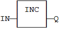
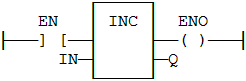

Function
Increases a numerical variable:
|
Name |
Type |
Description |
|
IN |
ANY |
Numerical variable (increased after call). |
|
Type |
Description |
|
|
Q |
ANY |
Increased value. |
When the function is called, the variable connected to the IN input is increased and copied to Q. All data types are supported except BOOL and STRING: for these types, the output is the copy of IN.
For REAL values, variable is increased by 1.0. For TIME values, variable is increased by 1ms.
The IN input must be directly connected to a variable and cannot be a constant or complex expression.
This function is particularly designed for ST language. It allows simplified writing as assigning the result of the function is not mandatory.
IN := 1;
Q := INC (IN);
(* now: IN = 2 ; Q = 2 *)
INC (IN); (* simplified call *)

